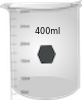
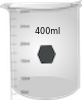

1. स्पेक्ट्रोफोटोमीटर से परिचित होना।
2. पाॅवर बटन पर क्लिक कर उपकरण को चालू करें और उपकरण के इनिशिअलाइज़/तैयार होने के लिए 30 मिनट तक प्रतीक्षा करें।
3. निम्नलिखित दो घोल तैयार करें-एक) ~ 0.001 एम. पोटेशियम डाइक्रोमेट (K2Cr2O7) और दो) ~ 5mg/एल कैफीन, डिस्टिल्ड वाटर में। ये घोल, दो वॉल्यूमीट्रिक फ्लास्कों पर दिखाए गए हैं। ड्रॉप-डाउन मेन्यू से इच्छित घोल पर क्लिक करके माप के लिए एक घोल का चयन कर सकते हैं।
4. साफ, सूखा बीकर लेने के लिए बीकर पर क्लिक करें।
5. स्वच्छ, सूखे बीकर में घोल डालने के लिए वॉल्यूमीट्रिक फ्लास्क पर क्लिक करें।
6. बीकर से सही मात्रा में घोल इकट्ठा करने के लिए माइक्रोप्रिपेट पर क्लिक करें। वास्तविक ऑपरेशन में, माइक्रोप्रिपेट पर एक उपयुक्त नोक लगायी जाती है और घोल में डुबोने से पहले ज़रूरी वॉल्यूम के हिसाब से स्केल को सेट किया जाता है।
7. उस पर क्लिक करके एक क्युवेट लें।
8. क्युवेट पर क्लिक करके, माइक्रोपिपेट से क्युवेट में घोल उड़ेलें। वास्तविक मापन में, क्युवेट को लगभग उसके दो-तिहाई आयतन तक भरा जाता है।
9. स्पेक्ट्रोफोटोमीटर का ढक्कन खोलने के लिए उस पर क्लिक करें।
10. सैंपल होल्डर में रखने के लिए क्युवेट पर क्लिक करें। इस मापन में पानी को रिक्त नमूने या संदर्भ के बतौर उपयोग करना होता है। यहां पर एक डबल बीम स्पेक्ट्रोफोटोमीटर दिखाया गया है। इस मामले में कोई भी सैम्पल को सैम्पल होल्डर में (अक्सर सामने वाले) और सैंपल बैंक या रिफरेंस को रिफरेंस होल्डर (अक्सर पीछे वाले) में रखा जा सकता है।
11. स्क्रीन पर स्पेक्ट्रल स्कैन की वेवलेंग्थ रेंज को दर्ज करें।
कैफीन के लिए-प्रारंभ : 590 एनएम, अंत : 290 एनएम।
K2Cr2O7 के लिए-प्रारंभ : 700 एनएम, अंत : 325 एनएम। वास्तविक ऑपरेशन में, चुने गए सैंपल के लिए इनसिडेन्ट लाइट की वेवलेंग्थ रेंज और वेवलेंग्थ स्कैन को अकम्पनीड कंप्यूटर सॉफ्टवेयर के माध्यम से चलाया जाता है। स्कैन को एब्ज़ार्बंस (A) या ट्रांसमिटंस (%T) मोड में चला सकते हैं।
12. तरंग-माप स्कैन को चलाने के लिए मेज़रमेंट सेट-अप स्क्रीन पर हरे ’स्टार्ट’ बटन पर क्लिक करें। वेवलेंग्थ स्कैन को ध्यान से देखें। यदि स्पेक्ट्रोफोटोमीटर सिंगल बीम उपकरण है, तो पहले रेफरंस सैंपल को एक क्युवेट में लेकर तरंग-माप स्कैन चलाने के बाद सैंपल चलाया जाता है। संबंधित तरंग-मापों के लिए सैंपल डेटा से संदर्भ डेटा को घटाना होता है।
13. स्पेक्ट्रल स्कैन पूरा होने पर क्लोज़ बटन पर क्लिक करें। वास्तविक ऑपरेशन में, स्कैन डेटा को कंप्यूटर में संग्रहीत किया जाता है। उपकरण डेटा संग्रहीत करता है और इसलिए सैंपल फ़ाइल नेम के लिए पूछता है। एक फ़ाइल नेम देकर डेटा सेव किया जाता है।
14. दूसरे सैंपल के लिए माप को दोहराएं।
15. डेटा टैब पर क्लिक करके डेटा एकत्र करें।
16. दोनों सैंपल के लिए अवशोषण (या पारगमन) बनाम वेवलेंग्थ को प्लॉट करें और यदि संभव हो तो, दोनों नमूनों के स्पेक्ट्रमों को एक के ऊपर एक रखें/ओवरले करें।
17. दोनों नमूनों के मेन पीक के लिए अधिकतम अब्ज़ॉर्प्शन की वेवलेंथ्स की गणना करें

 
